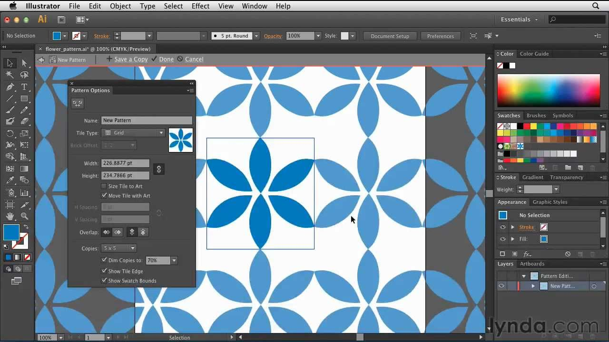

어도비
포토샵
이미지 보정 · 합성 · 디지털 그래픽 제작의 기본 도구
포토샵은 디지털 이미지 작업의 표준 프로그램으로, 사진 보정과 합성, 콘텐츠 제작에 널리 활용됩니다.
디지털미디어디자인과에서는 다음과 같은 작업을 위해 사용합니다
사진 색감 보정 및 노이즈 제거
배경 제거/합성, 디지털 페인팅
웹/앱 디자인용 UI 그래픽 제작
SNS·광고용 썸네일 및 시각 자료 제작
포스터 · 배너 · 인쇄물 디자인
“이미지 기반 디자인 작업의 출발점”
디자이너로서 기본적으로 다룰 수 있어야 하는 핵심 툴입니다.
일러스트

벡터 기반 로고 · 아이콘 · 인포그래픽 제작의 핵심
일러스트레이터는 해상도에 영향을 받지 않는 벡터 디자인 프로그램입니다.
로고 디자인, 브랜드 아이덴티티 제작
아이콘 · 심볼 디자인
캐릭터 일러스트 제작
인포그래픽, 프레젠테이션용 그래픽 제작
포스터, 전단 등의 인쇄 레이아웃 구성
“브랜딩과 시각적 정체성을 만드는 도구”
기획을 시각적 언어로 표현하는 데 최적화된 프로그램입니다.
프리미어 프로

영상 편집과 연출을 위한 표준 툴
프리미어 프로는 영상 편집의 핵심 프로그램으로, 촬영된 영상을 구성하고 컷 편집·색보정·오디오 작업을 수행합니다.
과제/프로젝트용 영상 편집
자막 · 그래픽 · 사운드 믹싱
색감 보정(Color Grading) 연출
SNS 콘텐츠 · 모션그래픽 편집
“스토리와 메시지를 시각적으로 완성하는 과정”
다른 Adobe 프로그램과의 연동성이 뛰어나 효율적으로 작업할 수 있습니다.
에프터 이펙트

모션 그래픽 · VFX(시각효과)의 중심 프로그램
After Effects는 영상에 모션, 효과, 애니메이션을 적용하는 모션그래픽 툴입니다.
로고 모션그래픽 제작
UI/UX 프로토타입 애니메이션
자막 및 그래픽 애니메이션
파티클 · 빛 효과 · 합성(VFX)
영화/광고 스타일의 실험적 비주얼 제작
3D 레이어 기반 공간 연출
“정적인 디자인을 살아 움직이게 만드는 도구”
창의적인 시각 표현과 실험적 연출이 가능해 학생들이 가장 좋아하는 프로그램 중 하나입니다.